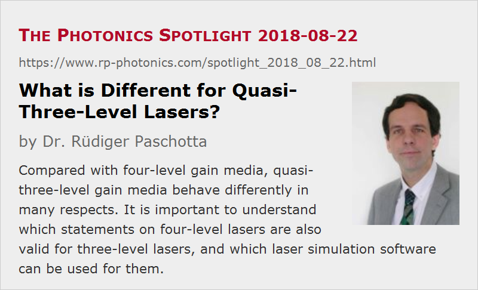

What is Different for Quasi-Three-Level Lasers?
Posted on 2018-08-22 as a part of the Photonics Spotlight (available as e-mail newsletter!)
Permanent link: https://www.rp-photonics.com/spotlight_2018_08_22.html
Author: Dr. Rüdiger Paschotta, RP Photonics Consulting GmbH
Abstract: Compared with four-level gain media, quasi-three-level gain media behave differently in many respects. It is important to understand which statements on four-level lasers are also valid for three-level lasers, and which laser simulation software can be used for them.

It is reasonably well known that there are so-called quasi-three-level gain media, which are in some respects different from four-level gain media. However, it is often not quite clear e.g. which statements of lasers and amplifiers found in textbooks can still be considered to be valid for such gain media, and which statements have to be abandoned or modified. The same kind of doubts apply to some laser simulation software.
In the following, I give you a discussion of the main differences. Generally, I assume that we are talking about solid-state gain media like Yb:YAG or erbium-doped fibers, but mostly the information can also be applied to other gain media.
People working with bulk lasers may find quasi-three-level media not so common, although there are quite a few of them, for example Yb:YAG, Er:YAG and Tm:YAG. In the area of fiber amplifiers and lasers, quasi-three-level gain media are most common; we have few four-level media in that domain.
Reabsorption: Negative Gain without Pumping
The most fundamental difference is that while an unpumped four-level gain medium is simply transparent to the laser light, a quasi-three-level gain medium has some significant absorption in that state. Some level of pump intensity is required just to obtain transparency, and positive laser gain is achieved only for intensities higher than that. See Figure 1 as an example.

The reason for that is that the lower laser level has some significant occupation in the thermal equilibrium, since its energy is only slightly above the ground state. Therefore, laser photons can be absorbed, bringing ions to the upper laser level. In four-level lasers, that process can happen only with pump light, but not with the laser light, as the lower laser level is quickly depopulated by non-radiative processes (typically by multi-phonon transitions).
Depending on the balance of the emission and absorption cross sections of the laser transition, the quasi-three-level nature can be more or less pronounced. For example, for Yb:YAG we require an upper-state population of ≈5% to reach transparency at 1030 nm (the most common laser wavelength). An extreme case is Yb in silica glasses, as used for many fiber lasers and amplifiers, if one wants to obtain lasing or amplification at the 975-nm peak; in that case, ≈50% excitation are required for transparency. At longer wavelengths like 1030 nm or even 1060 nm, a couple of percent are again sufficient.
Magnitude of Gain and the Gain Spectrum
The laser gain achieved with quasi-three-level gain media is often lower than that for four-level media. However, that is not strongly related to the three-level nature as such; in most cases, it is more because some typical gain media have relatively low transition cross sections. For example, if you could remove the reabsorption of Yb:YAG at 1030 nm (at least while dreaming), you would still not obtain that much gain from it. In particular, it could never compete with Nd:YVO4, which has very high emission cross sections.
A characteristic specialty of quasi-three-level gain media is that the shape of the gain medium depends on the excitation level. For example, Yb-doped fibers (see Figure 2) exhibit only positive gain at longer wavelengths like 1050 nm, as long as the excitation level is very small. For stronger excitation, you get a gain peak at 1030 nm, and for really strong excitation even very high gain at 975 nm, where we previously had only strong absorption.
High Pump Intensities
A required excitation of e.g. 5% or 10% of the laser-active ions may not appear as extreme, but it does require a substantial pump intensity. It is hardly possible, for example, to reach such intensities in lamp-pumped lasers. Typical lamp-pumped Nd:YAG lasers, for example, are operated with far lower pump intensities and also much lower excitation densities. Typically, quasi-three-level bulk lasers must be end-pumped and require a substantial pump brightness.
In case of fiber devices, the required pump powers are quite small due to the small mode areas; for single-mode fibers, pump and signal saturation powers are often well below 100 mW.
Intracavity Intensity
The typical intracavity laser intensity, however, is not substantially modified by the three-level nature of the gain medium. In any case, that intensity must be several times the saturation intensity in order to operate the device several times above the laser threshold. Still, Yb:YAG is operated with substantially higher intracavity intensities than Nd:YAG, but that is simply a consequence of the low emission cross sections, not of the quasi-three-level nature.
The common rule that the intracavity intensity is (r − 1) times the saturation intensity, when the device is operated r times above the pump threshold, does not hold for quasi-three-level lasers. The same holds for certain other equations involving that parameter r.
By the way, the formulas for calculating saturation intensities or saturation energies are also different from those for four-level gain media: where you had the emission cross section only, you now have to put the sum of the absorption and emission cross section.
Limited Pump Absorption Efficiency
When using a four-level gain medium, you can usually obtain efficient absorption of the pump radiation simply by making the crystal long enough or using a sufficiently high doping concentration. That approach cannot be used for quasi-three-level gain media, since that part of the laser crystal which is only weakly pumped at the end would be below transparency and thus only reabsorb laser radiation. Therefore, the pump absorption efficiency in an optimized design is often well below 90% – particularly in cases where the available pump brightness is not particularly high, or where you have to operate with particularly high degree of excitation.
By the way, it is erroneous to believe that bidirectional pumping would be a solution to that problem. This is because the overall pump absorption efficiency does not depend on the direction of propagation. What can help, however, is reflecting back the unused pump power.
Pump Saturation and Heat Generation
In four-level gain media, pump saturation effects are often negligibly weak, simply because of the low pump intensities and the low excitation state of the gain medium. For quasi-three-level gain media, however, we have seen that substantial excitation of the gain medium is required, and that inevitably leads to significant pump saturation effects.
You might think that this cannot be so important e.g. for Yb:YAG, if we only need 5% excitation for transparency. However, first of all we often need to operate it well above transparency. Further, if we operate with 10% excitation, for example, that often implies a reduction of pump absorption by substantially more than 10%, since we do not only have reduced absorption by ions in the ground state, but also stimulated emission by excited ions. Many people would not think about stimulated emission by pump radiation, but this can be quite relevant in such lasers.
Somewhat related to saturation effects, the heat generation density can also not be assumed to be simply proportional to the pump intensity.
By the way, there is commercially available laser simulation software, where it is claimed that it is also suitable for quasi-three-level gain media, although one can recognize quite problematic aspects in the available descriptions. For example, I recently saw a case where they calculate the pump intensity distribution based on the assumption that there is no pump saturation – probably without being aware that this cannot be accurate. Further, they assume that the heat generation density is simply proportional to the pump intensity – which is also not true. Under those conditions, even the most advanced finite-element solver for the temperature and stress distribution in the crystal cannot produce accurate results. In my view, it would be more sensible to use a much simpler model for the temperature calculation (e.g. based on a purely radial heat flow, which is often very well approximated in practice), but feed that with an accurate calculation of the heat density. The overall accuracy may then be better while the computational effort is much lower.
Conversion Efficiency
Some people think that quasi-three-level lasers are inherently less power-efficient because of the energy losses by reabsorption. This is not true, however; the details are more complicated:
- It does not matter for the efficiency that during laser operation there is always a substantial absorption rate for the laser light in the laser crystal, because the absorbed optical energy stays in the system: you can consider it as supporting the pumping.
- However, the pump absorption efficiency is often quite limited, as explained above, and that of course deteriorates the power conversion efficiency.
- Additional difficulties may arise from substantial thermal lensing, which is associated with the required intense pumping. In some cases, that also affects the conversion efficiency.
- On the other hand, quasi-three-level gain media (particularly the ytterbium-doped ones) often have a very small quantum defect, and that factor is definitely good for the efficiency.
Indeed, for example ytterbium-doped fiber amplifiers or lasers often reach conversion efficiencies of the order of 80% – substantially better than those e.g. of Nd-doped fiber devices. By the way, some of those are operated at quite long laser wavelengths (e.g. 1064 nm or even 1100 nm), where the quasi-three-level nature is not strongly pronounced, but high efficiencies can also be achieved a shot at wavelengths like 1040 nm.
When it comes to bulk lasers, the difficulties arising from the quasi-three-level nature are often more severe. For example, Nd:YAG lasers emitting on the quasi-three-level transition at 946 nm usually have a lower power efficiency than the usual 1064-nm lasers, despite the lower quantum defect.
Challenges for Laser Modeling and Design
Obviously, the designs of lasers and amplifiers based on quasi-three-level gain media are tentatively more challenging, because a number of additional aspects have to be taken care of. For that reason, the need for physical modeling of such devices is tentatively stronger. But obviously one should be sure that the modeling is not based on assumptions which are fulfilled only for four-level gain media. Therefore, I recommend to be skeptical and trust only statements and software from people who surely understand the physics of quasi-three level laser gain media.
This article is a posting of the Photonics Spotlight, authored by Dr. Rüdiger Paschotta. You may link to this page and cite it, because its location is permanent. See also the RP Photonics Encyclopedia.
Note that you can also receive the articles in the form of a newsletter or with an RSS feed.
Questions and Comments from Users
Here you can submit questions and comments. As far as they get accepted by the author, they will appear above this paragraph together with the author’s answer. The author will decide on acceptance based on certain criteria. Essentially, the issue must be of sufficiently broad interest.
Please do not enter personal data here; we would otherwise delete it soon. (See also our privacy declaration.) If you wish to receive personal feedback or consultancy from the author, please contact him e.g. via e-mail.
By submitting the information, you give your consent to the potential publication of your inputs on our website according to our rules. (If you later retract your consent, we will delete those inputs.) As your inputs are first reviewed by the author, they may be published with some delay.
|  |
If you like this page, please share the link with your friends and colleagues, e.g. via social media:
These sharing buttons are implemented in a privacy-friendly way!